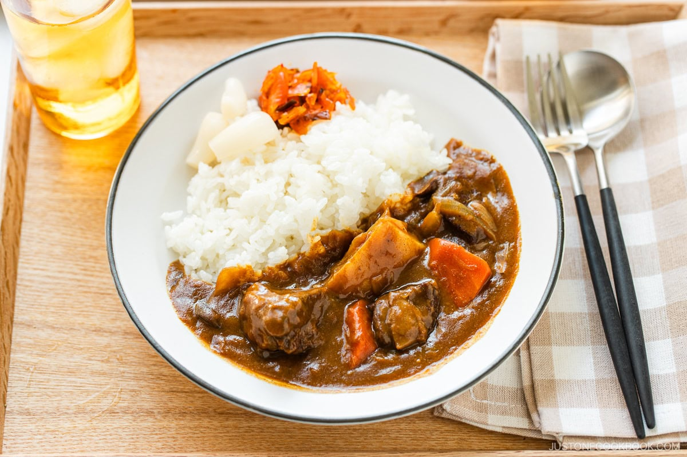

Japanese Curry

Decription
Japanese Curry is a popular comfort food in Japan, known for its rich, mildly spicy, and slightly sweet flavor. Typically served with rice, it features a thick curry sauce made with a blend of vegetables, meat (usually chicken, pork, or beef), and Japanese curry roux blocks. It's a hearty and satisfying dish, often enjoyed at home and in casual restaurants across the country.
Ingredients
- 2 tablespoons vegetable oil
- 1 onion, sliced
- 2 carrots, chopped
- 2 potatoes, peeled and chopped
- 500g (1 lb) chicken, pork, or beef (cut into bite-sized pieces)
- 3 cups water
- 100g Japanese curry roux (store-bought curry blocks)
- Salt and pepper to taste
- Cooked white rice (for serving)
Steps
- Heat oil in a pot
- Cook the onions until soft
- Add meat and cook until browned
- Add carrots and potatoes and stir
- Add water and bring to a boil
- Reduce heat and simmer until vegetables are soft
- Turn off heat and add curry roux blocks
- Stir until the roux is melted
- Simmer again on low heat until thick
- Serve with rice